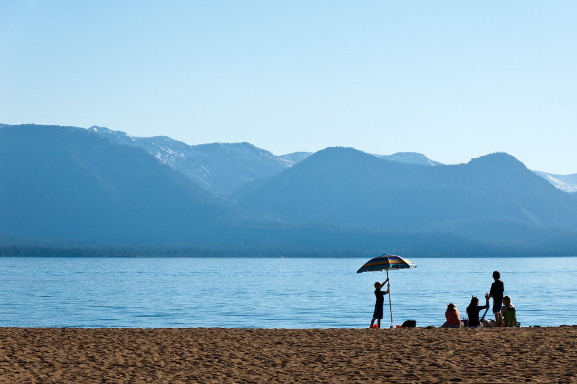
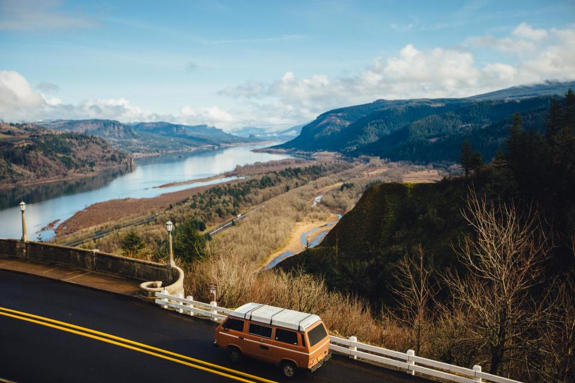
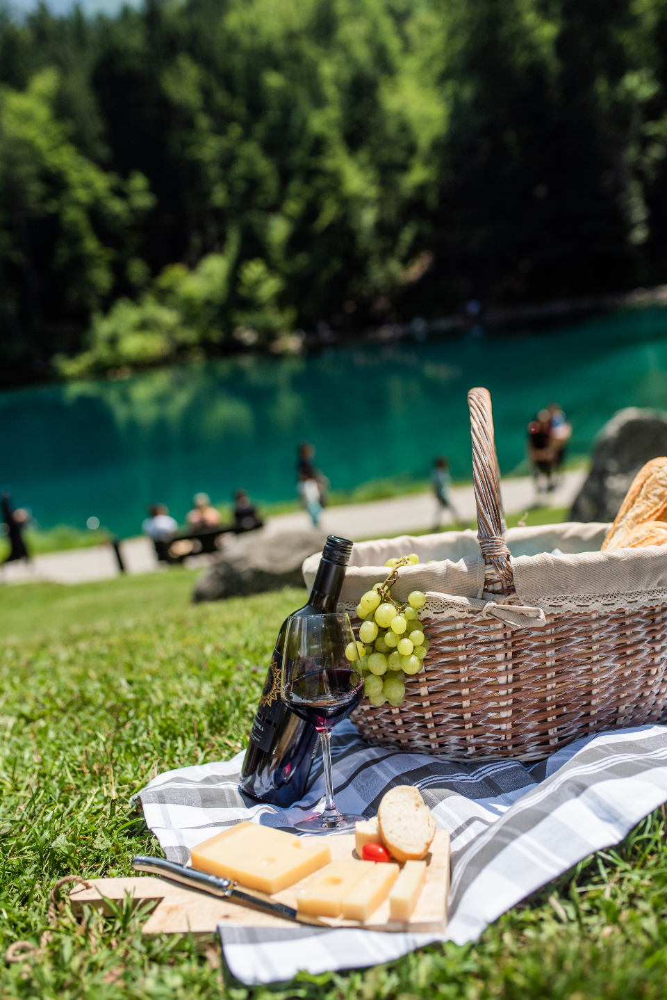

- Ngày
- 12 đến 14 tháng 7, 2026
- Nơi
- Đà Lạt, Lâm Đồng
- Số ảnh
- 236 ảnh, 11 video
Ai có mặt
- TBố Tuấn
- LMẹ Linh
- SSu
- BBin
Gợi ý của AI
Mình đã xem qua mục này và có hai đề nghị. Bạn quyết định giữ hay bỏ.
3 ảnh bị mờ đã được ẩn. Các ảnh chụp ở đèo Prenn bị rung tay.
Gộp với mục Cuối tuần ở nhà? Hai mục có chung 9 ảnh chụp ngày 11 tháng 7.
Ngày 1
Hà Nội đến Đà Lạt, đường đèo

Ngày 2
Hồ buổi sáng, chợ đêm buổi tối

Ngày 3
Cà phê sáng, rồi về nhà